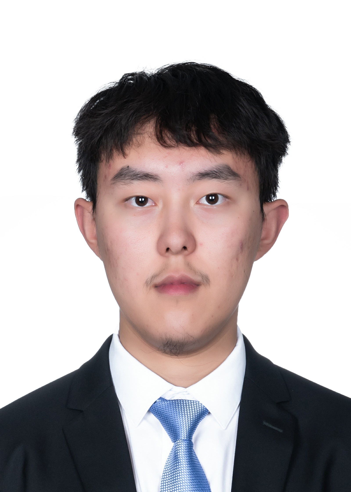

Hello and welcome. My name is Wenxiao Cai(Russell Robin) and I am an undergraduate student in Southeast University based in Nanjing, China.
My research interest lies in algorithms and applications in deep learning and computer vision. I am particularly interested semantic segmentation and its applications on drones images, such as image stitching and 3D reconstruction. Check my work and publication on research page